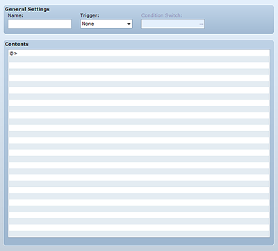

Common events are events that can be run at any time during the game. Use then to define general processes within the game as a whole, including the monitoring of play status and performing a process when an item or skill is used. The common events you create can be run using the Common Event event command or by flipping a specific switch on.

The name of the common event. This setting is only used by the editor and has no impact on game play.
Specify one of the following triggers for starting the process defined in Contents. Note that Autorun and Parallel are only valid while displaying the map screen.
Starts running the defined common event when explicitly called, such as with the Common Event event command.
Starts running the defined common event when a switch specified by Condition Switch flips on.
Starts running the defined common event when a switch specified by Condition Switch flips on, and will repeatedly run it while the switch remains on.
If the trigger is Autorun or Parallel, specify the switch that will be the signal for starting the common event. If there are multiple common events for which the same switch is specified, the one with the most recent ID number (on the list) will be run.
Set the event commands to be run by this common event. The editing method is the same as that for Contents defined for map events.
When the Autorun or Parallel trigger is specified, the common event defined in Contents will repeatedly run while the switch specified in Condition Switch is on.
To stop this repeated running, the switch must be flipped off. If this is not done, the game may become unresponsive to user input.
If you find that the game becomes unresponsive during play testing, click the close box (×) at the top right corner of the game window or press Alt+F4 to abort the game.